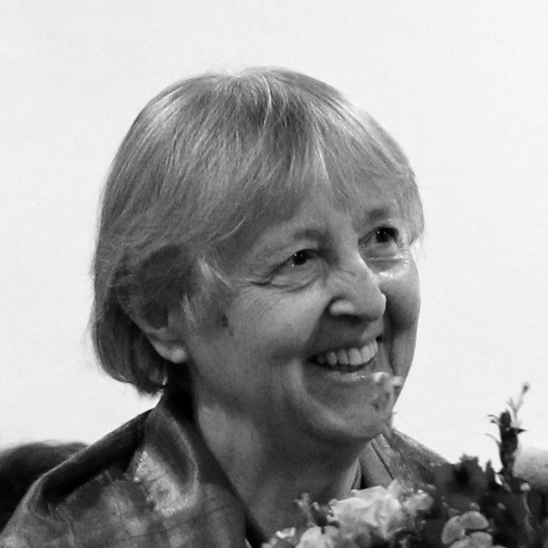

Dirigenti
- Zakladateľka a dirigentka Kvapôčiek Milica Machajdíková/Kailingová (jar 1968 – jar 1971)
- Jana Bubelková/Nagajová (jar 1971 – jar 1974)
- Drahuška Markušová (jeseň 1974 – jar 1975)
Tím
- Milica Machajdíková/Kailingová (jar 1968 – jar 1971)
- Milena Jurčová/Uhlíková (jar 1968 – jar 1971)
- Jana Bubelková/Nagajová (jeseň 1968 – jar 1974)
- Noemi Elisová/Krupová
- Zuzka Luptáková/Vyskočilová (jar 1971 – jar 1975)
- Drahuška Markušová (jeseň 1973 – jar 1975)
Deti
V tomto období v Kvapôčkach spievali:
Danka Polohová, Paľko Poloha, Rút Betinová, Ester Betinová, Evka Mazáková, Zuzka Luptáková, Ruženka
Boocová, Dušan Číčel, Blaho Číčel, Juditka Matejová, Hanka Luptáková, Dáša Bálintová, Rasťo Betina,
Samko Matej, Martinko Matej, Daniel Jurčo, Martin Jurčo, Odeno Lupták, Martinko Číčel, Ľubko Bálint,
Zuzka Potúčková, Svetlanka Markušová, Janka Rosová, Ľubka Rosová, Janko Kucek, Ivanko André, Paľko
Ciesar, Vierka Borošová, Dalma Cséfalvayová, Danko Matej, Jožko Hornáček, Janko Strelinger, Martuška
Bálintová, Danko Potúček, Martinko Ďuriška

Rozpráva Zakladateľka Kvapôčiek Milica Kailingová
Ako to všetko začalo
História jedného z najstarších slovenských detských spevokolov Kvapôčky začala v roku
1968, keď ma oslovil laický kazateľ zboru CB Róbert Poloha s návrhom, aby som sa pokúsila
vytvoriť podobný priestor pre deti, ako mal možnosť pozorovať v Spevokole mladých. Obaja spoločne
sme potom oslovili viaceré rodiny s deťmi, a tak vznikla prvá spevácka skupina asi 15 detí.
Spevokol na návrh malej Juditky Matejovej/Bánovej prijal názov Kvapôčky podľa knižky slovenskej
spisovateľky Kristíny Royovej Ako kvapôčka putovala.
Meno Kvapôčky sa stalo symbolom nadviazania na posolstvo a dedičstvo duchovnej práce s deťmi
podľa príkladu sestier Kristíny a Márie Royových. Z príbehu tejto knižky si deti spolu so mnou
a korepetítorkou Milenou Jurčovou/Uhlíkovou ujasnili základné princípy svojho pôsobenia v Kvapôčkach
– „robiť na zemi dobre“ a „chváliť Boha piesňami“. Hneď na prvý nácvik dostali Kvapôčky do daru
svoju hymnu – Vladimír Betina, otec troch detí v Kvapôčkach, zložil na známu melódiu toto posolstvo:
Kvapôčky padajú z neba na lúky, polia i háj, poslušne idú, keď treba ovlažiť vyprahlý
kraj.
Kvapôčky smädná zem pije, prameňom dávajú zrod; bystrina, potok z nich žije, Dunaj, Váh s bohatstvom
vôd.
Kvapôčky čerstvého dažďa oživia prírodu hneď, úlohu plní si každá, napojí vtáčka, či kvet.
Kvapôčky z oblakov Božích máme byť pre svoju vlasť, tam, kde sa ľudský žiaľ množí, chceme sa do
služby klásť.
Nikto na počiatku netušil, aká bude táto pieseň predvídavá, že z malého pramienka sa naozaj v priebehu
rokov stane veľký potok až rieka s bohatstvom vôd… že Kvapôčky budú putovať už 50 rokov a že
sa v ich spoločenstve vystrieda niekoľko generácií detí. A tiež, že v priebehu putovania
sa vždy nájdu ľudia, ktorí do tejto služby odovzdajú naplno svoje schopnosti, obdarovania, svoj život.
Prvý zájazd Kvapôčiek na Starú Turú (spolu s viacerými rodičmi) mal význam hlavne preto, že sme
zažili prostredie, z ktorého sa šírilo duchovné posolstvo na celé Slovensko, a piesňami sme
povzbudili tamojšie spoločenstvo veriacich. Navštívili sme cintorín, kde sú pochované Kristína a Mária
Royové, na ktorých dielo Kvapôčky nadviazali, a spravili sme si aj výlet na Čachtický hrad.
Rozpráva Jana Nagajová
Repertoár
Najskôr to bola hymna Kvapôčiek, potom piesne prekladané z češtiny, neskôr pribudla vlastná tvorba,
preklady, originálne texty aj hudba; mnohé z týchto piesní boli v roku 1977 zaradené do
Prídavku ku Kresťanskému spevníku (malý čierny detský spevník). Medzi prvé piesne, ktoré som prekladala
z češtiny, patrili napr. Verím, že Pán Boh je na nebi, Pre všetkých prekrásnu pieseň mám,
Kuriatka spia; medzi novšie s originálnym textom aj hudbou: Aký krásny stvoril Pán Boh tento svet
(Jana Nagajová/Ivan Valenta), Keď sa ľudia opýtajú (Jana Nagajová/Ivan Valenta), Ovečka sa tvoja
vinie (Mária Rafajová/Ivan Valenta),
Hudba a služba
Snažili sme sa čím častejšie spievať na bohoslužbách na Cukrovej, do iných miest sme sa pre politické
obmedzenia dostali zriedka, spievali sme v Leviciach na konferencii CB (ako Kvapôčky; aj spolu so
Spevokolom mladých, ktorý tiež dirigovala Milica), na Starej Turej. Pred Vianocami sa začalo s tradíciou
koledovania. Mladí ľudia, ktorí študovali v Bratislave, prinášali do svojich domácich zborov aj
piesne Kvapôčiek, takže sa ich naučili aj ďalšie deti.
Vďaka novému bratislavskému kazateľovi Františkovi Ciesarovi sme sa v roku 1972 dostali na zájazd
na Těšínsko, spievali sme v 3 zboroch (Horní Suchá, Hrádek a Český Tešín), v pásme
zaznelo 19 piesní. Povzbudzovalo nás, ako na nás reagovali počúvajúci. Okrem spievaných piesní boli
niektoré deti schopné povedať aj svoje svedectvo. Na nácvikoch sa viaceré modlili.
Vzťahy a komunita
Veľkou výzvou pre mňa bola zmena, keď sa osvedčená dirigentka Milica Machajdíková/Kailingová rozhodla
odovzdať Kvapôčky mne, zároveň s ňou odišla fundovaná klaviristka Milena Jurčová/Uhlíková a staršie
deti. Bolo potrebné získať nové deti, náhradu za klavírny sprievod; aj piesne vhodné pre mladšie deti.
Samozrejme, veľmi dôležité bolo získať si dôveru rodičov, ktorí boli zvyknutí na Milicu.
Vzťahy medzi Kvapôčkami boli silné, boli to deti z rodín zboru, ktoré sa často navštevovali, takže
sa kamarátili. Ja som učila detskú besiedku a tiež som navštevovala rodiny, takže deti, ktoré ma
zažili v besiedke a pri hrách v rodine, prirodzene nadviazali na známy vzťah aj v Kvapôčkach.
Vzťahy boli také silné, že pokračovali aj po mojom odchode do Bardejova a trvajú doteraz.
Hodnoty a vzťah s Bohom
Nácvik sa začínal modlitbami vedúcich aj detí, v krátkom úvode sme sa snažili zaujímavým spôsobom
posilniť myšlienku spievania na oslavu Pána Boha a života správnej Kvapôčky. Silný program
Skúsenosti s Bohom bol aplikáciou textov piesní Skús byť ako Daniel a Keď Mojžiš s ľudom
Božím preč z Egypta sa bral. O každej novej piesni sme sa rozprávali, aby ju deti mohli
spievať ako svoje vlastné vyjadrenie.
Ako povzbudiť deti v dobe nepriaznivej pre veriacich ľudí, aby sa nehanbili a nebáli?
V Kvapôčkach boli niektoré deti, ktorých otcovia alebo príbuzní boli v nedávnej minulosti
väznení preto, že sa neskrývali do anonymity, ale boli aktívni v práci zboru. Mladí ľudia v zbore
na Cukrovej boli povzbudzovaní k uvedomovaniu si Božej zvrchovanosti a svojej hodnoty v Božích
očiach. Preto sme aj my povzbudzovali Kvapôčky k tomu, aby sa nebáli, ale napríklad aj svojím
prístupom k povinnostiam v škole a svojím správaním sa k iným ľuďom dokazovali, že
žijú správne, že Pán Boh je s nimi. Výhodou oproti dnešku bolo, že nemali toľko mimoškolských
aktivít ako dnešné deti.
Mnohé a veľké sú tvoje divy, ktoré si ty učinil, Hospodine, môj Bože a tvoje myšlienky, vzťahujúce sa na nás! Povedal som: Budem to oznamovať a hovoriť o tom. Ale je toho taká sila, že sa to nedá vyrozprávať.
– Žalm 40, 8
Dirigenti
Tím
- Danka Staroňová/Juríková (1977 – 1983, okrem šk. r. 1979 – 1980, kedy sa vrátila do Suchej)
- Zuzka Potúčková (korepetítorka, 1978 – 1983)
- Dáša Bálintová/Danelová (1977 – 1978 niekoľko mesiacov)
- Edita Šalaiová/Piskáčková (1977 – 1978 niekoľko mesiacov)
- Daniel Machajdík st. (1981 – 1983 externý člen)
- Petr Michoněk (1982 – 1983)
Deti
V šk. roku 1977 – 1978 a 1978 – 1979 bolo v Kvapôčkach cca 20 detí,
v nasledujúcich rokoch počet narástol na 30-34 detí.
V tomto období v Kvapôčkach spievali:
Marta Bálintová, Sväťo Betina, Robert Boroš, Lenka Borošová, Palko Boroš, Martin Číčel, Slávo Číčel,
Hanka Číčelová, Katka Číčelová, Zuzka Číčelová, Borka Číčelová, Zuzka Gőrnerová, Janko Havelka, Igor
Kamenský, Otilka Kamenská, Miško Kamenský, Danka Komáriková, Janko Komárik-Nino, Tomáš Komrska, Janko
Komrska-Anino, Benjamín Komrska-Benino, Támar Komrsková, Peter Komrska, Peter Kucek, Jožko Lupták, Števo
Machajdík, Dávid Machajdík, Melita Machalíková, Natália Markušová, Marek Markuš, Zora Markušová, Marína
Markušová, Martin Matej, Vlado Matej, Roderik Mihel, Helga Mihelová, Katka Mosná, Dáša Móžiová, Katka
Nagyová, Martin Rosa, Ľubka Rosová, Tomáš Rosa, Marek Smolinský, Daniel Smolinský, Hanka Tallová, Peter
Tallo, Tomáš Tuchyňa, Alenka Tuchyňová
Rozpráva Milica Kailingová
Repertoár
V roku 1977 bol vydaný spevník detských piesní pod názvom Prídavok ku Kresťanskému spevníku.
V ňom sa nachádzali v tom čase nové piesne, ktoré sme ako Kvapôčky uvádzali do života. Išlo poväčšine
o pôvodnú slovenskú hudobnú i textovú tvorbu, resp. preklady. Autori piesní: Vladimír Betina, Slavoj
Krupa, Jana Nagajová, Mária Rafajová, Ján Rosa a osobitne bohatá detská piesňová tvorba Ivana Valentu,
ktorý dal piesňam i dobre hrateľnú klavírnu sadzbu.
Postupne sa repertoár rozšíril o spirituály, renesančné kánony, ľudové piesne, trampské, folkové,
Taizé… následne aj o súčasnú kresťanskú tvorbu iných národov. Tieto piesne v prekladoch Jany Nagajovej
vychádzali v samizdatovom spevníku pre mládež Gitara sanctorum.
Letné pobyty
- 1979 – Havířov-Suchá / iba najstaršie deti (u Staroňovcov)
- 1980 – Tyra / všetci (na pozvanie Juraja Ciesara - brata nášho kazateľa Františka Ciesara)
- 1981 – Lazy pod Makytou / všetci (rodný dom Ciesarovcov)
- 1981 – Lazy pod Makytou / staršie dievčatá z Kvapôčiek BA + dievčatá z BJ s J. Nagajovou + dievčatá
z Těšínska s J. Ciesarom
- 1982 – Čeladná / staršie deti (chalupa Michalkovcov z Ostravy)
- 1982 – Bernolákovo / mladšie deti (Borošovci -oh, tá borošovská pohostinnosť..!)
- 1983 – Lazy pod Makytou / mladšie deti
- 1983 – Muráň / staršie deti
V roku 1979 sme uskutočnili historicky prvý letný pobyt (LP) Kvapôčiek. Stalo sa tak na podnet
najstarších detských členov. Týždňové pobyty sa postupne rozšírili na dvojtýždňové – delené na staršie
a mladšie deti, aby sme mohli témami aj formou lepšie naplniť ich potreby. Pravidelne sa ich ako
organizačná pomoc zúčastňovali niektorí rodičia detí, a čo je kľúčové - tiež noví mladí kresťania zo
zboru aj z mimozborového prostredia, čo bolo v tom čase úplne neobvyklé. Kládli nám nové otázky, a tak
nás nútili opustiť zaužívaný cirkevnícky jazyk a niekedy i spôsob života. Títo mladí ľudia – často
umelecky nadaní či zameraní na prírodu a trampovanie – ovplyvnili svojou prítomnosťou celkový charakter
a program LP.
Tak sme napr. s Danielom Pastirčákom na Lazoch 81 robili výtvarné stíšenia, ktorých ovocím bola výstava
a vernisáž obrazov namaľovaných deťmi.
Tieto Lazy mali svoje vyvrcholenie v uvedení predstavenia inscenovanej poviedky K. Kolmana: Bez
lásky– o ťažkom osude siroty-hrbáčika. Hlavnú postavu zahral Vlado Matej – a to sme vtedy vôbec
netušili, že raz bude nositeľom zmysluplných sociálnych programov v našej krajine, aj pre opustené deti
:) Celé predstavenie pripravili a naštudovali deti samotné ako prekvapenie aj pre mňa.
Scenár a réžia: Marta Bálintová, Tomáš Komrska /
Scénická hudba: Marta Bálintová, Dagmar Valentová ml.-Ejka, Peter Kucek /
Kulisy: Marta Bálintová, Tomáš Komrska a deti z Kvapôčiek /
Maskéri: Drahomíra Markušová, Daniel Pastirčák /
Herci: Vlado Matej, Tomáš Komrska, Danka Komáriková, Hanka Číčelová, Jozef Lupták, Marek Markuš, Danka
Staroňová a.h., Daniel Pastirčák a.h.
V Tyre sme zrealizovali vtedy obľúbený formát Televízneho klubu mladých (TKM), ktorý sme naplnili
scénkami, dialógmi, piesňami, poéziou, diskusiou – všetko zo života a tvorby osobností prebudeneckého
hnutia, čomu sme sa venovali celý uplynulý školský rok. Nedá sa zabudnúť na „veľkoplošnú obrazovku“,
ktorú z dverí medzi kuchyňou a izbou chalupy vytvoril Tomáš Komrska :)
S Danielom Pastirčákom a Petrom Michoňkom sme v Čeladnej rozmýšľali o umení, o jeho poslaní v živote
jednotlivca, cirkevného spoločenstva i spoločnosti vôbec; o Bohu, stvorení, kráse, pravde… púšťali sme
si hudbu, ktorú deti denne počúvajú a analyzovali sme piesňové texty z oblasti populárnej či rockovej
hudby.
Na Muráni Peter Michoněk a Vlado Pongrác-Pongy zásadne ovplyvnili náš postoj k čundrákom a trampom,
ktorých trasa na hrad Muráň viedla bezprostredne popri „našej” horárni. Prijímali sme ich pri ohni, aby
sa zohriali, podávali sme im čaj a chlebíky, spievali sme s nimi, učili sme sa vnímať ich inú kultúru
a pohľad na svet.
Od začiatku sme na LP zaviedli Večery otázok a odpovedí, kde žiadna otázka nebola tabu, a ak
niekto potreboval ešte osobnejší rozhovor, ponúkli sme deťom osobné prechádzky či rozhovory v izbe alebo
stane. (Tomášov pamätný veľký drevený otáznik… :)
Týždeň pre mladšie deti sme pripravovali spolu s najstaršími Kvapôčkami – obsah celého programu
i spôsob, ako to odovzdať tým mladším - takto rástli a preberali osobnú zodpovednosť.
Pobyty obsahovali aj ďalšie vzrušujúce aktivity, ako sú športové olympiády, nezabudnuteľné nočné
pochody, ale i spevácke sústredenia, hudobné súťaže Harfa pre tam vytvorené hudobné skupiny. Toto
všetko rozvíjalo tvorivý potenciál detí aj ich schopnosť rozpoznávať a tvoriť hodnoty.
Letné pobyty za totality neboli povolené, a tak sme si boli vedomí existenčného ohrozenia nás vedúcich
aj tých, ktorí nám poskytli svoje domy či chalupy. Ako príklad spomeniem rozhovory so zástupkyňou
riaditeľa školy, kde som pôsobila, v ktorých ma upozorňovala, že ak niekto oficiálne nahlási moje letné
aktivity s deťmi, riaditeľ ma musí okamžite prepustiť. Podobne, ako sa to stalo opakovane v prostredí
iných cirkevných spoločenstiev. Práca s deťmi mimo budovy cirkvi bola zo strany štátu vnímaná ako
ideologická diverzia… Všetko sme konali iba v plnej dôvere voči Pánu Bohu a jeho ochrane, vo vedomí
modlitebného zázemia mnohých ľudí.
Projekty, ktoré stáli za to
-
Scénické pásmo podľa poviedky K. Royovej Ako Kvapôčka putovala, ktoré sa takým
spôsobom prihováralo poslucháčom v rôznych zboroch i denomináciách, že náš priateľ z BJB Šaňo Erdőly
inicioval jeho nahrávanie (marec a máj 1981), ktoré bolo výnimočným zážitkom pre nás
všetkých. V roku 1998 bola vydaná oficiálna reedícia nahrávky v 3-komplete: kniha-kazeta-spevníček
piesní.
-
Dramatizácia poviedky K. Kolmana Bez lásky, kompletne inscenovaná a naštudovaná samotnými deťmi.
Premiéra na LP Lazy 81, reprízy v CB Bratislava 19.12.1981, Stará Turá…
-
Súťaž v učení sa biblických veršov spamäti – deti si samé zadali počet veršov, s ktorými chcú
súťažiť; štyria si určili po 100 (!) veršov, víťazi vycestovali na zájazd do CB Čes. Budějovice.
-
Každoročný letný festival Harfa, „stvorený” na Lazoch 81… impulzom bola tam
vzniknutá chlapčenská hudobná skupina Vodopády.
-
Oživovanie biblických situácií – špeciálne stretnutí Pána Ježiša Krista s deťmi – formou hraných
príbehov či pantomímy.
-
Scénická interpretácia básne E. Komárika Sodoma; tiež niekoľko pásiem z poézie J. Nagajovej,
spojených s osobnou reflexiou detí na jednotlivé básne.
-
Celoročné tematické programy: •Biblické postavy (Abrahám, Mojžiš, Samuel, Dávid, Daniel,
Timoteus… •Osobnosti prebudeneckého hnutia na Slovensku (K. a M. Royová, J. Roháček,
J. Chorvát, J. Machajdík, J. Rataj, S. Činčurák, J. Školník…) •Tajomstvá: nielen poslucháčmi, ale aj
činiteľmi…
-
Spievanie počas oficiálnej návštevy amerického evanjelistu Billyho Grahama v Československu
2.11.1982.
-
Zájazdy do iných zborov: Stará Turá (každoročne), Zlatovce (každoročne formou menších skupín
detí), Letovice (jún 1981), Levice (apríl 1982), Horní Suchá (máj 1982), České Budějovice (november
1979 - malá skupina, apríl 1983 - celý spevokol). Tieto návštevy boli inšpiráciou k založeniu niektorých
ďalších detských spevokolov.
Hudba a služba
Vyrastala som v rodine Jána Machajdíka, vzácneho človeka, učiteľa a hudobníka, ktorý na každej škole,
kde pôsobil, zakladal spevokoly. Komponoval a harmonizoval mnohé kresťanské piesne, založil
celorepublikový spevokol a hnutie Hudobná domovina, ktorého poslaním bolo pokračovať v duchovnom
a umeleckom dedičstve K. a M. Royovej. Naše rozhovory doma o hudbe, o umení v cirkvi, o potrebe
vzdelaných hudobníkov v jej prostredí ovplyvnili moje rozhodnutie pre štúdium na konzervatóriu.
Počas štúdia som iniciovala vznik Spevokolu mladých a neskôr založila Kvapôčky. V oboch
telesách sa jednou z kľúčových tém stala otázka: ako to urobiť, aby to, čo spievame, bola v našich
životoch pravda. Priebežne sme túto otázku kládli sebe i deťom, veľa sme sa o tom rozprávali
a odpovede sme hľadali •v Biblii – keď sme skúmali, ako žili ľudia, ktorí verili Bohu; •v histórii – keď sa
deti skontaktovali s potomkami jednotlivých osobností prebudeneckého hnutia a v ich životoch i tvorbe
hľadali odpovede; •v rozhovoroch s našimi duchovnými priateľmi.
Rozprávali sme sa o textoch piesní - čo hovoria nám a čo chceme nimi povedať iným ľuďom, ale i Bohu.
Výsledky týchto skúmaní a rozhovorov formulovali deti často do svojich krátkych zamyslení, ktoré sme si
navzájom čítali či prerozprávali.
V čase totality formát koncertov nebol mysliteľný. Spievali sme na bohoslužbách (v priemere 2-3x za
mesiac, 5-6 piesní). Okrem toho sme pravidelne zaraďovali do nedeľných stretnutí zboru tematické
večery, kde sme celému spoločenstvu prinášali (dospelí aj deti) výsledky nášho rozmýšľania a
hľadania, samozrejme doplnené viacerými piesňami. Niektoré témy deti spracovali nielen slovesne (úvahy,
poviedky, poézia), ale i výtvarne (kresby, maľby, modely a makety) a hudobne (nové piesne).
Ako učiteľka hudby som zapájala do aranžmánov piesní všetky deti, ktoré sa učili hrať na hudobné
nástroje – aby ich úsilie zvládnuť nástroj bolo zúročené v tom, čo sme nazývali službou spevom.
Snažila som sa vytvoriť aj priestor na malé stretnutia s hudbou (mimo nácvikov), kde som pobádala deti
k tomu, aby sme si navzájom hrali nacvičené skladby a prípadne komentovali, čo sa im na nich páči. Táto
iniciatíva sa nestretla s porozumením vtedajšieho vedenia zboru, ktoré to vnímalo ako nevhodnú hudbu
v cirkevných priestoroch. Podobne bola niektorými mienkotvornými ľuďmi odmietnutá inscenácia poviedky K.
Kolmana, či formát TKM. Bolo to v čase, keď sa cirkevné spoločenstvo k svetu umenia nie raz stavalo
odmietavo.
Môj život a poslanie učiteľky hudby v škole a súčasne dirigentky detského spevokolu na pôde cirkvi však
bol nedeliteľný. A tak sme sa aktívne zaoberali hudbou a umením hlavne počas letných pobytov. Tiež
viaceré z detí i členov tímu sa stali súčasťou mojej klavírnej triedy, čo mi pomáhalo vnášať do
rozmýšľania detí i rodín iný pohľad na hodnotu umenia a osobitne na dar od Pána Boha – akým je nielen
kresťanská pieseň, ale aj hudba ako taká.
Hodnoty a vzťah s Bohom
Kvapôčky mali od svojho založenia ujasnené dva hlavné ciele: služba spevom a služba
životom. Avšak – ako sa to dá naplniť? Stačí chodiť na nácviky a spievať? Stačí niekedy
niekomu pomôcť? V priebehu sme čoraz jasnejšie a zreteľnejšie porozumeli, že ide o niečo oveľa
dôležitejšie: že v skutočnosti ide o celoživotné poslanie, o životný štýl.
Piesne, rozhovory, osobné prežívanie viedli deti k potrebe hlbšieho vzťahu s Pánom Bohom. Niektoré
z nich na letných pobytoch v úprimnej viere odovzdali svoj život Pánovi Ježišovi Kristovi. Stalo sa tak
v normálnych situáciách, keď ma požiadali o rozhovor a povedali mi to a ja som vytvorila priestor na
rozhovor s Pánom Bohom. Významný v tomto zmysle bol hlavne pobyt v Tyre. Po rozhovoroch s rodičmi sme sa
s týmito deťmi začali okrem nácvikov stretávať ešte v malých skupinkách k rozhovorom, čítaniu Biblie,
modlitbám, a prirodzene, i zábave a hrám. Náš (vtedy iba malý) tím – Danka Staroňová a ja – nestíhal
pokryť túto potrebu. Oslovila som môjho brata Daniela Machajdíka, ktorý pozvanie prijal a pripojil sa
k nám na dva školské roky. Vytvorili sme tak štyri skupinky: staršie dievčatá - MKa / stredný vek dievčat - DS
/ mladšie deti - MKa / chlapci - DM.
Vzťahy v komunite Kvapôčiek sa ešte viac prehĺbili – navzájom deti, aj
deti a my dospelí. Významným spôsobom to ovplyvňovalo každé naše spievanie na bohoslužbách či
zájazdoch. Bolo to pozorovateľné na celej atmosfére spoločenstva.
Táto nová skúsenosť s deťmi nás nútila k vážnemu zamysleniu sa nad otázkami: Môže už
dieťa odovzdať svoj
život Bohu? Ako sa to má reálne prejaviť v jeho živote? Čo to znamená pre jeho budúcnosť? Môžeme viesť
dieťa, aby bolo nasledovníkom, učeníkom Krista?
V tom čase CB nemala jasne formulované odpovede na
tieto otázky. Znamenalo to pre nás aktívne študovať Bibliu aj inú literatúru s touto témou. Chcem na
tomto mieste poďakovať našim priateľom v tíme EOM, ktorý viedol Milan Číčel, za porozumenie a zdieľanie
sa v spoločnom hľadaní, ktoré nás obohacovalo a prehlbovalo našu dôveru a očakávanie na Boha. Osobitnou
podporou mi na tejto ceste bol môj manžel Pavel.
Dirigenti
- Daniel Matej (1983 – 1988)
- Milena Uhlíková (1988 – 1989)
Tím
- Hanka Číčelová/Matejová (1985 – 1993)
- Juraj Kušnierik – korepetítor (1983 – 1986)
- Daniel Matej (1983 – 1988)
- Vlado Matej (1987 – ?)
- Renátka Marfőldiová/Matejová (1983 – 1989)
- Danka Staroňová/Juríková (1983 – 1985)
- Milena Uhlíková (1986 – 2003)
- Jozef Uhlík (1987 – 1994)
Deti
V tomto období v Kvapôčkach spievali:
Bálintová Lenka, Bálintová Slávka, Bálint Tomáš, Bálint Martin, Boroš Pavel, Borošová Andrea,
Borošová Lenka, Číčelová Borka, Číčelová Hanka, Číčelová Mária, Číčelová Zuzka, Danihelová Jarka,
Danihelová Kamilka, Danihelová Lydka, Ďurčeková Mária, Ferenčík Samko, Ferenčíková Danka,
Gőrnerová Elenka, Gőrnerová Zuzka, Havelka Janko, Horňák Daniel, Horňák Fero, Horňáková Paulína,
Hlatká Jana, Jakeš Martin, Kamenská Otília, Kamenský Igor, Kamenský Michal, Kintler Jakub,
Kintlerová Míša, Klamková Hanka, Klamková Katka, Komárik Nino, Komrska Anino, Komrska Benjamín,
Komrska Pavel, Komrska Peter, Komrsková Ráchel, Komrsková Támar, Kováčová Katka, Krupová Mária,
Krupová Henrieta, Krupa Radko, Krupa Slávko, Kušnír Ján, Kušnírová Jana, Kušnírová Mária,
Machajdík Dávid, Machajdík Štefan, Markuš Marek, Markušová Broňa, Markušová Marína, Markušová Zora,
Mihelová Helga, Nánasiová Mária, Smolinská Táňa, Smolinský Daniel, Smolinský Marek, Smolinský Ľubo,
pišiaková Marína, Surkošová Zuzka, Šicko Šimon, Šicko Janko, Tallo Peter, Tallová Hanka, Tallová Miriam,
Trebula Lukáš, Uhlík Lukáš, Uhlíková Kristína, Vanenkovová Katka, Vrábel Andrej

Rozpráva Milena Uhlíková
Projekty, ktoré stáli za to
Zájazdy a vystúpenia
- 30. 6. – 1.7. 1984 – návšteva Kvapôčiek z Bardejova pod vedení Janky Nagajovej
– spoločný program a spievanie počas nedeľného zhromaždenia.
- 25.5. – 26. 5. 1985 Stará Turá. Výlet na Čachtický hrad.
- V tomto období sa uskutočnil zájazd do Bardejova. Do vystúpenia v zbore CB boli zaradené aj
svedectvá detí, jedno z nich mal Benjamín Komrska, ktorý verejne sľúbil, že bude každý deň 5 minút
cvičiť na gitare a preslávil sa výrokom „Chcem žiť život obety“.
Nahrávanie
Nahrávanie kazety Prišlo k nám voňavé leto bolo prelomové. Spevokol nielen posunulo dopredu po hudobnej
stránke, ale aj stmelilo z hľadiska vzťahov. Udialo v dvoch termínoch – v zime 1986 a v lete 1988.
Nahrávanie bolo pololegálne a uskutočnilo sa v priestoroch modlitebne na Cukrovej 4 v malej sále.
V zime sme nahrali vianočné piesne, v lete viacero piesní, vedúcou piesňou bola skladba Daniela Mateja na
slová Janky Nagajovej Prišlo k nám voňavé leto. Pri nahrávaní pomáhala Milica Kailingová, Samuel Matej
aj Peter Zagar. Na nahrávaní v oboch termínoch sa zúčastnili aj Kvapôčky z Bardejova. V 1988 sa preto
neuskutočnil ani letný pobyt, Kvapôčky pri nahrávaní strávili jeden týždeň na Cukrovej a to sa
„počítalo” za letnú aktivitu. Počas tohto týždňa bola aj Bratislavská harfa, výlet loďou po Dunaji.
Ubytovanie bolo v rodinách, stravovali sme sa na Cukrovej.
Pre mňa bola významná spolupráca s bardejovskými Kvapôčkami, s ktorými nás spájala ich dirigentka Janka
Nagajová, moja dlhoročná priateľka, ktorá v minulosti bola dirigentkou Kvapôčiek aj v Bratislave a ktorá
bola textárkou mnohých piesní. Spevokoly sa navzájom navštevovali, staršie deti z Bardejova sa
zúčastnili nielen oboch nahrávaní kazety, ale časť z nich aj dvoch letných pobytov na Lazoch.
Kazeta nikdy nevyšla oficiálne, rozmnožovala sa svojpomocne a rozširovala sa medzi členmi Kvapôčiek
a priateľmi bez obalu, bez grafiky. Daniel ako dirigent nahral kazetu a odcestoval na ročný študijný pobyt
do Francúzska. Finalizáciu nahrávky uskutočnili Peter Zagar a Milica Kailingová. Autorom poézie na
kazete je Emil Komárik. Možno viacerí spoznáte aj hlasy recitátorov, Juraja Kušnierika a Vlada
Mateja.
Repertoár
Aký bol náš repertoár? Samozrejme, staval na piesňach predchádzajúceho obdobia, ktoré ovplyvnila Milica
Kailingová, predchádzajúca dirigentka. Boli to klasické detské piesne, najmä z kazety Ako kvapôčka
putovala. Postupne k nim pribudli nové piesne. V druhom roku fungovania priniesol Daniel Pastirčák
z Anglicka platňu s vianočnými piesňami Jona Andersona zo skupiny YES, ktorá sa zapáčila Danielovi
Matejovi a viedla k tomu, že použil piesne z tejto platne vrátane Andersonových aranžmánov na nahrávanej
kazete (Bim, bam raduje sa zvon, Svet sa rúti). Okrem toho sa tak do repertoáru, ako aj na kazetu
dostali slovenské vianočné koledy a tiež pôvodná pieseň Daniela Pastirčáka K jasličkám.
Daniel Matej ako študent kompozície na VŠMU prizýval k niektorým vystúpeniam svojich spolužiakov –
hudobníkov. Tak sa na nahrávke ocitli skvelé inštrumentálne sprievody v podaní Petra Vrbinčíka, Miloša
Valenta, Petra Spišského a Petra Michoňka. Džezové aranžmány piesní Sotva lúč a Táto
pieseň musí znieť
vytvoril Daniel, ktorý ich sám zahral na klavíri, na basovej gitare Jozef Lupták, Peter Važan na bicích.
Podobne aj mozartovská predohra či medzihra v piesni Ej, už nikde snehu niet je z Danielovho pera.
Daniel skomponoval aj skladbu Prišlo k nám voňavé leto pre zbor a malý orchester, ktorá sa stala
ústrednou piesňou letnej nahrávky. Piesne z nahrávky tvorili následne základ repertoáru tohto
obdobia.
Hudba a služba
V období 80. rokov, keď na Slovensku vládol komunistický ateistický režim, sa už samotná existencia
detského speváckeho zboru pohybovala na hrane legálnosti. Deti boli takmer výlučne z rodín členov zboru,
Kvapôčky boli vnímané ako vnútrozborová práca. Stretávanie za účelom nacvičovania piesní sa dialo
v priestoroch modlitebne na Cukrovej ulici, vystúpenia spevokolu boli v rámci bohoslužieb, keď deti
zaspievali dve alebo tri piesne. V tomto období Kvapôčky nemali väčšie koncerty, spievali iba na
nedeľných bohoslužbách, prípadne na zájazdoch, tiež pri príležitosti oslavy Vianoc.
Počas letných pobytov sa spievali piesne vhodné do prírody – folkové, trampské, väčšinou v českom
jazyku.
Daniel Matej ako študent VŠMU mal viacero kamarátov – hudobníkov, ktorých prizýval k spolupráci, a tak
pre deti, ako aj pre členov tímu to bola príležitosť počuť iný typ hudby. Jeho osobný odborný rozvoj sa
prirodzene prenášal aj do práce s detským zborom. Účastníci letného pobytu na Lazoch 1987 si spomínajú,
ako rozdelení do skupín sa svojimi hlasmi či nástrojmi učili udržať si svoj jednoduchý hudobný motív,
opakovať ho viackrát po sebe, pridávať postupne nové prvky, aby sa dozvedeli, že práve produkovali čosi,
čo sa volá „minimal music”. V roku 1987 Daniel založil Veni Ensemble, ktorý pôsobí dodnes, a viacerí
z jeho členov v tom období prišli do kontaktu aj s Kvapôčkami. Miloš Valent, Peter Spišský, Peter Važan,
Petr Michoněk, Roman Harvan, Tóno Popovič, Peter Zagar, aby sme menovali niektorých z nich, sa
zúčastnili aj na nahrávaní kazety. Prizývanie mladých profesionálnych hudobníkov bolo prínosom nielen
pre samotné Kvapôčky, ale obohatením pre hudobný život zboru. Zároveň pre týchto mladých ľudí bolo
stretnutie s Kvapôčkami dotykom s kresťanstvom a príležitosťou rozvíjať rozhovory na vážne otázky
zmysluplnosti života a kresťanstva.
Pôsobenie Daniela Mateja ako dirigenta sa ukončilo v 1988, keď odišiel na študijný pobyt do Paríža.
Nasledovalo krátke obdobie, keď som túto funkciu prevzala ja, aby som ju odovzdala ďalej Vladovi
Matejovi. Daniel s Renátkou sa rozlúčili s Kvapôčkami na letnom pobyte na Novom Svete v nasledujúcom
roku 1989.
Vzťahy a komunita
Kvapôčky boli dobrovoľným speváckym telesom na pôde zboru Cirkvi bratskej v Bratislave. Jeho členmi
v 80. rokoch boli deti z rodín členov a priateľov zboru, vedúcimi, teda dirigentom a pracovným tímom, boli
tiež ľudia z prostredia cirkvi, nielen z bratislavského, ale aj z iných slovenských (a českého) zborov.
Pre deti bola účasť v spevokole vítaným spestrením ich každodenného života popri škole a krúžkoch. Deti
sa väčšinou poznali z besiedky, rodiny v zbore sa navzájom poznali a navštevovali. V Kvapôčkach sa tieto
vzťahy ešte viac upevnili.
Ako tímaci sme boli pre deti v role „starších kamarátov”, snažili sme sa nadviazať s nimi vzťahy dôvery.
Tie sa utužovali počas roka tým, že sme podľa možností deti pozývali k sebe na obedy alebo chodili
s nimi na prechádzky. Aj v tomto období sa niektoré staršie deti stretávali s nami v skupinách, kde sme
preberali rôzne témy bežného života dieťaťa či dospievajúceho mladého človeka. V skupinovej práci sa
bežne používala Biblia ako zdroj pre hľadanie odpovedí. Najintenzívnejšie sa vzťahy budovali na letných
pobytoch, kde sa častokrát vytvorila taká atmosféra, že deti cítili slobodu zdieľať aj veľmi osobné
otázky či pochybnosti svojej viery.
Ani v práci Kvapôčiek sme sa však nevyvarovali chýb, ktoré sprevádzajú každú ľudskú aktivitu – a to sa
týkalo predovšetkým oblasti vzťahov, komunikácie alebo aj štýlu práce. Snažili sme sa však vzniknuté
napätia a problémy hneď riešiť. Usilovali sme sa vždy získavať spätnú väzbu od zainteresovaných ľudí –
detí, ich rodičov, pracovníkov v zbore, svojich mentorov. V Kvapôčkach bola dlhodobo prítomná snaha
neustále sa zlepšovať, rásť, a to nielen v speváckej a hudobnej oblasti, ale aj v oblasti medziľudských
vzťahov, nášho poznania detskej psychiky a spirituality a vlastného duchovného napredovania členov
tímu.
Hodnoty a vzťah s Bohom
Z môjho pohľadu po päťdesiatich rokoch existencie speváckeho zboru je jedným z najvýznamnejších faktorov,
ovplyvňujúcich také dlhé fungovanie jednej skupiny s rovnakým poslaním a s takmer rovnakými hodnotami,
schopnosť odovzdávania „pochodne”. Kvapôčky počas svojej histórie viackrát stáli pred existenciálnou
otázkou „čo ďalej bez dirigenta”. To, že sa dokázali nájsť ochotní ľudia, ktorí tú pochodeň alias
dirigentskú paličku prevzali, pokladám za malý zázrak. Rovnako je nezvyčajné to, že sa našli ľudia
ochotní a schopní tímovo pracovať a vždy znovu si klásť otázky, ako osloviť deti a ako ich viesť k spevu
aj duchovnému životu.
Na začiatku Danielovho obdobia stálo rozhodnutie Milice, predchádzajúcej dirigentky a zároveň
zakladateľky Kvapôčiek, ukončiť prácu s deťmi s úmyslom venovať sa mladej generácii spolu so svojím
manželom Pavlom. Toto rozhodnutie bolo premyslené a pripravené tak, že ponúkli svoje sily pri
sprevádzaní nového vedenia Kvapôčiek, čo museli obhájiť pred vtedajším staršovstvom. Kontinuita sa
zachovala tak, že novým dirigentom sa stal mladý študent hudby Daniel Matej, korepetítorom Juraj
Kušnierik, za duchovné programy bola zodpovedná Danka Staroňová/Juríková. Prvý nácvik v novom školskom
roku sa uskutočnil 12. 11. 1983.
Zodpovednosť za dielo sa nekončí odchodom vedúcej osobnosti, rozmýšľame o tom, kto bude pokračovať po
našom odchode. Snažíme sa rozpoznať obdarovanie v mladom človeku a mať odvahu osloviť ho, hoci nie je
celkom pripravený, no vnímame jeho potenciál. Sprevádzanie nových ľudí sa deje prirodzene tak, že spolu
robíme veci až do času, keď je mladý človek zrelý postupovať samostatne.
Takto prebehlo odovzdanie dirigentstva z Milice na Daniela, a to nielen v hudobnej oblasti, ale aj
v duchovnej. Ako spomína Daniel, bolo preňho zaujímavé stať sa dirigentom a v tom čase si sám ujasňovať
základné otázky viery a svojho smerovania: „Práca v Kvapôčkach bola súčasťou môjho duchovného rozvoja,
dostal som dôveru, no nenechali ma v tom samého”. V tejto súvislosti treba spomenúť aj to, že Daniel
spolu s Jurajom boli už predtým žiakmi ZUŠ v Milicinej triede. A v neposlednom rade aj to, že duchovnú
podporu tomuto kvapôčkovskému tandemu dlhodobo poskytoval Pavel Kailing.
Medzigeneračná spolupráca charakterizuje Kvapôčky nielen pri odovzdávaní zodpovednosti za vedenie
spevokolu, ale aj v samotnej práci vo vzťahu tímak a dieťa a v rámci spevokolu aj medzi deťmi, ktoré sú
rozdielneho veku a dochádza k zaujímavej a obohacujúcej interakcii. Zdá sa, že medzigeneračný dialóg je
dôležitý duchovný princíp, na ktorom stoja a existujú Kvapôčky.
Akú tvár má dnešná Kvapôčka?
Podľa útržkovitých spomienok vedúcich či samotných Kvapôčiek v tomto období bola otázkou, ktorá sa
vracala v rôznych obmenách, tvár súčasnej Kvapôčky. Kto to je Kvapôčka? Ako vyzerá? Ako sa správa
v rôznych situáciách každého dňa? Čím sa odlišuje od iných detí? Ako si má zachovať svoju vieru
v prostredí, ktoré je často nepriateľsky naladené voči kresťanstvu?
V tomto období sa to, ako sme sa my duchovne rozvíjali a riešili otázky vlastnej identity, premietalo
aj do práce s deťmi – ak sme sa zaoberali vo vlastnom živote „istotami, ktoré máme v Bohu”, tak sa to
nejakým spôsobom objavilo aj v programoch, ktoré sme pripravovali pre deti. Zároveň sme si uvedomovali,
že máme byť úprimnými, autentickými, nechceli sme sa tváriť, že sme lepšími, než sme boli, zároveň, že
chceme „kopať hlboko” a „ísť na hlbiny” a snažiť sa o „posvätenie”, aby sme citovali heslá
z kvapôčkovských pobytov alebo programov. Zaoberali sme sa otázkou spirituality detí, do akej miery si
deti uvedomujú potrebu rozhodnutia sa pre život s Kristom, ako ich v tom povzbudzovať, ale netlačiť
a ako ich ďalej sprevádzať, keď dospejú vo svojom vývoji k dôležitým rozhodnutiam. Snažili sme sa vytvoriť
bezpečné prostredie otvorené akejkoľvek otázke zo strany detí a cenili sme si ich úprimnosť, ak
napríklad dievča počas letného pobytu vznieslo svoju pochybnosť: „Má to vôbec celé zmysel?”
Dirigenti
- Vlado Matej (1988 – 1990)
- Jozef Lupták (1990 – 1994)
Tím
- Katka Číčelová/Luptáková (1986 – 1994)
- Hanka Číčelová/Matejová (1985 – 1993)
- Lydka Danihelová/Kašlik (1991 – 1995)
- Lenka Bálintová/Šillerová (1991 – 1998)
- Jozef Lupták (1990 – 1994)
- Vlado Matej (1988 – 1994)
- Renátka Marfőldiová/Matejová (1985 – 1989)
- Barbora Číčelová (1988 – 1991)
- Peter Komrska (1988 – 1991)
- Števo Machajdík (prvýkrát na chvíľu)
- Milena Uhlíková (1986 – 2003)
- Jozef Uhlík (1987 – 1994)
Deti
Počet detí sa v jednotlivých šk. rokoch pohyboval medzi 30 - 40
André Igor, André Ján, Bálintová Lenka, Bálintová Slávka, Bálint Tomáš, Bálint Martin, Boroš Paľo, Borošová Andrea, Číčelová Mária, Číčelová Pavla, Danihelová Jarka, Danihelová Kamilka, Danihelová Lydka, Ďuriška Martin, Ferenčík Samko, Ferenčíková Danka, Fűlőpová Margaréta, Gőrnerová Elenka, Horňák Daniel, Horňák Ferko, Horňáková Marta, Horňáková Pavlína, Hlatká Jana, Jakeš Martin, Jakešová Zuzka, Kintlerová Miša, Kintler Jakub, Klamková Hanka, Klamková Katka, Komrska Pavel, Komrsková Ráchel, Krupová Mária, Krupa Slávko, Kušnír Ján, Kušnírová Jana, Kušnírová Mária, Machajdík Dávid, Markušová Broňa, Markušová Ester, Markušová Marína, Markušová Zora, Nánášiová Mária, Nováková Kristínka, Podhradská Mária, Podhradský Daniel, Rusnoková Danka, Rusnoková Irenka, Smolinská Táňa, Smolinský Daniel, Smolinský Ľubo, Spišiaková Marína, Spišiaková Slávka, Surkošová Zuzka, Šajgalová Danka, Šajgalová Veronika, Šicko Filip, Šicko Ján, Šicko Šimon, Tallová Miriam, Tomeková Roxana, Trebula Lukáš , Trebulová Rebeka, Uhlík Lukáš, Uhlík Matúš, Uhlíková Kristína, Vanenkovová Katka, Vozárová Stanka, Vrábel Andrej

Rozpráva Hanka Matejová
Projekty, ktoré stáli za to
Zájazd
Musím povedať, že jedným z najsilnejších zážitkov z tohto obdobia je pre väčšinu Kvapôčiek zájazd do Nemecka. Uskutočnil sa 30. 9. – 6. 10. 1992 na pozvanie diakonického združenia Bethanien Solingen (riad. Ernst Schwedes a sestra Carola Engel). Zažili sme nielen tvrdú prácu a koncerty, ale aj návštevu detského zábavného parku Phantasialand, továrne na hračky Wader (odkiaľ si každé dieťa odnieslo krásny darček), plavbu loďou po Rýne a prehliadku hradu. Výťažok z benefičných koncertov v Solingene a Bonne Kvapôčky darovali združeniu Betánia Slovensko. Jej riaditeľ Igor André spoluorganizoval celý zájazd a zúčastnil sa na ňom spolu s nami. Na koncertoch v Nemecku sme mali v repertoári aj nemecké piesne. Jednou z nich bola aj táto:
Ich danke dir, Vater im Himmel,
daß ich auf der Erde bin,
du gabst mir ein schönes Angesicht
dazu einen frohen Sinn.
Vater, ich danke dir heute dafür, dafür.
Ich sehe Mond und die Sterne,
ich freue mich am Sonnenschein,
am Regen, am Wind, am Schmetterling
und über mein Schwesterlein.
Vater, ich danke dir heute dafür, dafür.
Ich danke dir, Vater im Himmel,
daß du immer zu mich liebst,
daß du mich bewahrst tagaus, tagein
und mir so viel Gutes gibst.
Vater, ich danke dir heute dafür, dafür.
Nahrávanie
V dňoch 30. 6. 1993 – 4. 7. 1993 sme s dirigentom Jozefom Luptákom (v spolupráci s Lydkou Danihelovou a Lenkou Bálintovou) nahrali kazetu Mám nádherný sen. Nahrávalo sa v štúdiu Poltón na Laurinskej ul. v Bratislave. Hlavnou myšlienkou bolo spájanie. Spájanie toho, čo by sme chceli, a reality, ktorá je okolo nás. (Spájanie národov, Spájanie generácií a Spájanie človeka a Pána Boha). Na nahrávaní sa zúčastnili aj Kvapôčky z Bardejova. Hudobnú réžiu sme zverili Petrovi Zagarovi. Na nahrávaní hudobne spolupracovala Milica Kailingová.
Repertoár
S príchodom dirigenta Jozefa Luptáka sa zvýšil dôraz na kvalitnú interpretáciu. Nosnými piesňami tohto obdobia boli pieseň Mám nádherný sen, Do you love him a Orchester. V repertoári sa objavujú aj piesne komunity Taizé (Benedictus, Magnificat), piesne od Petra Ebena (Mám nádherný sen), spirituály (De angel roll de stone away), worshipy (Jesus, I adore you), ľudové piesne s novým textom (Vkladám do modlitby) aj koledy (Do tichej noci), piesne iných národov, napr. židovské a africké a i. (Do you love him). V tomto období sme tiež objavili čaro piesní od domácich a nám blízkych autorov (od Janky Nagajovej - Sedmokráska, od Slavoja Krupu - Credo, od Ivana Valenta - Krídlom svoje holúbätká, Ovečka). V porevolučnej atmosfére sme sa ľahko vedeli stotožniť aj s folkovými piesňami (Stánky).

Rozpráva Jozef Uhlík
Hudba a služba
Zmenou politických pomerov v roku 1989 sa postupne začala meniť a rozširovať aj cieľová skupina našich poslucháčov. Služba, pôvodne orientovaná iba do spoločenstiev našej cirkvi, sa rozšírila aj na iné cirkvi, charitatívne akcie či spoločenské podujatia a tiež vystúpenia za hranicami nášho štátu. Napríklad:
- 17. 11. 1990 sme vystúpili na zhromaždení k 1. výročiu Nežnej revolúcie na nám. SNP
- 1. 12 -2.12. 1990 sme boli na zájazde na Starej Turej, kde sme už nie na pôde cirkvi, ale v kultúrnom dome vystúpili s programom Deti deťom
- 16. 12. 1990 sme mali vystúpenie na Vianočných trhoch na Hrade v Bratislave
- 9. 11. 1991 sme zorganizovali benefičný koncert v katolíckom kostole v Marcheggu, to bolo naše prvé vystupovanie za hranicami, z ktorého si mnohé deti, vyrastené v komunistickom režime, odniesli svoje prvé spomienky na slobodnú krajinu. Výťažok z dobrovoľného vstupného Kvapôčky darovali Betánii v Senci.
Vzťahy a komunita
Kvapôčky boli (tak ako aj v iných obdobiach svojej existencie) špecifické tým, že sa snažili byť multigeneračnou komunitou detí rôzneho veku a dospelých. Bolo radosťou zažívať tie momenty, keď sa deti, ktoré by za „normálnych” okolností nemali prečo o seba zavadiť, začali spolu rozprávať, hrať, tvoriť napr. piesne na Harfu. Napríklad na Novom Svete v roku 1989 mala Harfa neopakovateľnú atmosféru. Vystúpili na nej svetoznáme zoskupenia a kapely ako: APAČI (Benjamín Komrska), KIWI (Pavel Komrska), TŔNE (Slávko Krupa), EKOLÓGIA (Nino Komárik s hrou na pílu), BENETON (Lenka Bálintová), MAHARADŽI (Tomáš Bálint), JAKALI (Lydka Danihelová), LÚČNE KVETY (Táňa Smolinská). Udelené boli ceny Za odvahu, Za aktuálnosť, Za originalitu, Za interpretáciu a Za poetickosť. Verili sme tiež, že deti sa najviac a najefektívnejšie učia o spôsobe života a o Bohu cez vzťahy s inými. Toto naše presvedčenie sa odzrkadlilo v tom, že sme kládli dôraz na snahu o rast tímakov, ďalej v tom, ako sme sa snažili tráviť spoločný čas s deťmi a aj pri spôsobe, ktorý sme používali pri tvorbe vážnych programov. Ďalšie špecifiká tohto obdobia boli:
- Kvapôčky sa začali otvárať deťom prichádzajúcim zvonku – členmi Kvapôčiek sa stávajú aj priatelia detí z iných cirkevných spoločenstiev alebo zo škôl.
- Kvapôčky v skupinách chodievali na spoločné obedy k členom tímu.
- Tím ponúkol deťom možnosť stretávať sa v skupinkách s biblickým štúdiom a zdieľaním.
- Do tímu boli prizývaní aj priatelia tímakov s hudobným vzdelaním, čím sme chceli podporiť napr. kvalitu nácviku spevu.
- V rámci tímu existovali úzke vzťahy, ktoré pomáhali členom tímu v ich duchovnom raste (pravidelné stretávanie nielen s organizačným programom, ale aj so zameraním sa na napĺňanie ich duchovných potrieb, víkendové sústredenia tímu).
- Pre tímakov bola práca v Kvapôčkach školou manažmentu a silnou školou tímovej spolupráce, ktorá ich, podľa ich slov, ovplyvnila na celý život.
- Fakt, že intenzívna práca môže spájať, sme dokázali tým, že z tímakov z tohto obdobia vzniklo niekoľko partnerstiev, ktoré časom vyústili do manželstva (Daniel a Renátka Matejovci, Vlado a Hanka Matejovci, Ivan a Lenka Šillerovci, Jozef a Katka Luptákovci).
- Na práci tímu Kvapôčiek sa podieľali a deti ovplyvňovali významné osobnosti slovenskej hudobnej scény Daniel Matej, Jozef Lupták a Ivan Šiller.
Hodnoty a vzťah s Bohom
Deti v Kvapôčkach v tom čase pochádzali z rodín z prostredia Cirkvi bratskej na Cukrovej 4. Od svojich rodičov aj z besiedky mali veľa informácií, poznali biblické príbehy, cirkevné tradície, vedeli o očakávaniach na vzorný spôsob života, ktorý mal byť svedectvom pre nepriateľské okolie, o Božej existencii a moci. V tomto prostredí som aj ja videl svoju úlohu v tom, aby som viedol deti k porozumeniu, že Boh túži mať osobný vzťah s každým jedným z nás aj s každým dieťaťom - a že to, čo ovládame ako teóriu, sa má reálne ukázať v našom každodennom živote a rozhodnutiach. S týmto presvedčením sme všetci vytvárali:
- Celoročné programy - kde sme na úvodoch nácvikov otvárali otázky a snažili sa motivovať deti k aplikáciám pre náš praktický život.
- Biblické skupiny - konali sa v užšom kruhu detí, mimo času nácvikov a mimo Cukrovej. Tu boli vytvorené lepšie podmienky na rozhovory o osobných témach, ktorými deti žili, a o otázkach, ktoré si kládli.
- Modlitebné programy - napríklad cez letné prázdniny, keď sa hľadal dirigent, mali deti pripravený program, za čo sa majú denne modliť v oblasti budúcnosti Kvapôčiek.
- Na letných pobytoch - používali sme rôzne formy na podporu hľadania a rozmýšľania u detí. Bol to tzv. vážny program, ako napríklad na mimoriadnom pobyte v Mojmírovciach v r.1991 s programom o Vďačnosti ako o životnom postoji. Prežili sme priam hmatateľne Božie požehnanie a Božiu prítomnosť, keď sa podarilo vytvoriť takú priateľskú atmosféru medzi tímom a deťmi, ktorá vyústila do spontánnych modlitieb detí. Svoje rozhodnutie patriť Pánu Ježišovi v modlitbách vyjadrilo viacero chlapcov a dievčat. Tieto vzťahy s deťmi pokračovali počas ďalšieho školského roka v skupinách s Katkou Číčelovou a Vladom Matejom.
Ďalšími táborovými tradíciami sa stali: Eliášov vrch (tradičné koncotáborové modlitebné stíšenia v skupinkách, z ktorých sa v neskorších obdobiach vyvinula Ohňová cesta) a Domček pokoja (oddelené miesto na budovanie vzťahov, kam sa chodili deti alebo deti s tímakmi rozprávať o osobných a vzťahových otázkach).
Čo môžu dať Kvapôčky deťom, ktoré sa zo dňa na deň ocitli v krajine s množstvom nových príležitostí?
17. novembra 1989 sa začala Zamatová revolúcia. Všetci sme sa stali svedkami pádu totalitného komunistického režimu, ktorého oficiálnou doktrínou bol ateizmus a ktorý si dal za cieľ zničiť kresťanstvo ako škodlivú ideológiu. Kresťania boli považovaní za ľudí druhej kategórie. Cirkev bola trpenou štruktúrou, ktorú sa štát snažil držať v maximálnej miere pod kontrolou (Zákon o dozore štátu nad cirkvami). Jej činnosť obmedzoval na minimálnu mieru a vykázal ju do priestorov kostolov. Kvapôčky ako súčasť cirkevnej práce tieto obmedzenia pociťovali tiež. Letné pobyty boli chápané ako nežiadúce ovplyvňovanie mladej generácie a presahujúce rámec povolených akcií. Koncerty mimo kostolov neprichádzali do úvahy. Oficiálne vydanie hudobných nahrávok sa nepovoľovalo. Cirkev bola izolovaná a uzavretá do svojho vlastného sveta, ktorý však bol paradoxne vnútorne slobodný. Toto všetky sa zmenilo v priebehu Novembra 1989. Dozor štátu nad cirkvami bol zrušený. Samozrejme, aj Kvapôčky to pocítili. Cirkev zrazu stála pred otvorenými bránami a deti dostali príležitosti, o ktorých sa im predtým ani nesnívalo. Kvapôčky prestali byť jedinou alternatívou pozitívnej deviácie, deti zrazu dostali možnosť zapojiť sa do množstva nových aktivít. Otvorili sa im možnosti cestovať a študovať v zahraničí, či už bližšom, ako je Rakúsko, ale aj v celej Európe. Pred Kvapôčkami stála zásadná otázka: Čo je to, čo Kvapôčky dávajú deťom, čo nemôžu dostať nikde inde, aj keď sa ocitli v krajine s množstvom nových príležitostí?
Dirigenti
- Lenka Bálintová/Šillerová a Lydka Danihelová/Kašlik – 1995/1996
- Lenka Bálintová/Šillerová – 1996/1998
- Milenka Uhlíková – 1998/1999
- Lenka Bálintová/Šillerová/Ivan Šiller/Daniel Nagaj – 1999/2000, Lenka po návrate z Mittersillu a Ivan bol podporou pre Daniela ako budúceho dirigenta
Tím
- Lydka Danihelová/Kašlik (do 1996, odchod na štúdiá do Viedne)
- Lenka Bálintová/Šillerová (do jari 2000, s prestávkou na pobyt v Mittersille)
- Milenka Uhlíková
- Mária Číčelová/Machajdíková
- Nino Komárik (končí odchodom na vojnu do Levíc v zime 1996)
- Danka Ferenčíková/Bálintová (od júna 1995 – leto 1998, štúdium v medicíny v Martine)
- Ivan Šiller (od septembra 1995 – jeseň 1998, odchod do Belgicka, v školskom roku 2000/2001 robí hudobnú podporu Danielovi Nagajovi)
- Kristína Uhlíková (od júna 1997)
- Tomáš Bálint (od septembra 1997 – jeseň 1998)
- Števo Machajdík (od 19. januára 1999)
- Daniela Rusnoková/Meressa (1998 – 1999)
- Daniel Nagaj (od zimy 1999)
- Lukáš Uhlík (od jesene 1999)
Deti
V tomto období v Kvapôčkach spievali:
Igor André, Jano André, Kristína André, Bohuslava Bánová, Dano Bán, Jožo Bán, Andrea Borošová, Pali Boroš, Kathy Bussard, Adam Ciesar, Magda Ciesarová, Filip Číčel, Pavla Číčelová, Peter Cvik, Jarka Danihelová, Martin Ďuriška, Ester Erdélyiová, Danka Ferenčíková, Miriam Ferenčíková, Jano Ferenčík, Margarétka Fülopová, Magdalénka Fülopová, Marta Horňáková, Pavla Horňáková, Zuzka Jakešová, Lukáš Kavický, Zuzka Kerekrétyová, Janka Kerekrétyová, Jakub Kintler, Miša Kintlerová, Milan Kolomazník-Roháček, Soňa Kolomazníková-Roháčková, Tomáš Komrska ml., Katka Kubeková, Noel Kubinec, Boby Kubinec, Lenka Kušnírová, Janko Machajdík, Lea Matejová, Marína Matejová, Janka Mierna, Veronika Michalová, Mária Nanásiová, Daňa Rusnoková, Mirina Rusnoková, Anička Segešová, Miriam Tallová, Tomáš Trebula, Rebeka Trebulová, Andrea Spišiaková, Slávka Spišiaková, Marína Spišiaková, Saša Staňáková, Mária Šoltésová, Dorka Šoltésová, Matúš Uhlík, Jakub Uhlík, Mária Uhlíková, Kristína Uhlíková, Zuza Vargová, Andrej Vrábel, Mišo Vrábel, Anička Vanenkovová, Saša Vanenkovová, Katka Vanenkovová, Lenka Winzettlová, Maťko Garaj, Mária Kerekrétyová, Dávid Komrska, Maťo Koller, Damián Pastirčák, Deborka Pastirčáková, Juro Šoltés, Deborka Trebulová

Rozpráva Mária Machajdíková
Projekty, ktoré stáli za to
Čo bolo najvýraznejším projektom tohto obdobia? Určite zájazd do Chorvátska v apríli 1997. Nápad ísť spievať do zahraničia bol od samotných detí, výsledok ankety, ktorú sme robili. Najprv sme uvažovali o krajinách ako Švajčiarsko, Nemecko. Alan Bussard nás však motivoval ísť do vojnou zničenej krajiny. Inšpiráciou bola aj osobná skúsenosť Katky Číčelovej/Luptákovej, ktorá rok pomáhala ako koordinátorka humanitárnej pomoci v Zagrebe. Bol to skutočne silný zážitok navštíviť krajinu, ktorá mala stále viditeľné stopy po viacročnej vojne.
V nasledujúcom školskom roku 1997/98 sme si pripomínali 30. výročie vzniku Kvapôčiek. Celý rok sme pátrali po minulosti Kvapôčiek a spoločne sme to oslávili Veľkým lejakom, prvým veľkým stretnutím starých aj súčasných Kvapôčiek.
Spomínam si na veľký zájazd s názvom „Ohromné maličkosti“, zaviedol nás na jar 2000 do Prešova a Michaloviec. Program bol inšpirovaný poviedkou G.K. Chestertona a viedol nás k údivu nad obyčajnými drobnosťami v živote. Symbolicky tento zájazd uzavrel obdobie dirigovania Lenky Bálintovej. Oficiálne sme sa s touto dlhoročnou Kvapôčkou, tímačkou a dirigentkou rozlúčili na koncerte v Bratislave, kde odovzdala dirigentskú paličku Danielovi Nagajovi.
Repertoár
Úplne na začiatku tohto obdobia sme si vyskúšali muzikál. Spoločne s besiedkou sme pripravili Vianočný program. Inak sa v repertoári z tohto obdobia objavili aj staršie piesne z repertoáru Milice Kailingovej alebo Jozefa Luptáka (Boh mi z duše učinil, Mier na zemi, Prímluvný spev, Pieseň vypovie...). Vyskúšali sme aj skladbu Ivana Valentu Maranatha. Medzi stálice, ktoré si získali srdcia detí, patrili spirituály a z nich vynikali najmä Every time I feel the spirit a Gospel train. Nesmiem zabudnúť, že prvá skladba, ktorú do repertoáru priniesol nádejný dirigent Daniel Nagaj, bol Orion (Dale Garratt/Jana Nagajová).
Hudba a služba
Snažili sme sa pravidelne spievať na bohoslužbách. Podieľali sme na viacerých sviatočných (Vianoce, Veľká noc). Väčšie koncerty a zájazdy sa nám nedarilo urobiť každý rok. Niečo celkom nové však bolo, že sme svojím vystúpením podporili občianske združenie Návrat na charitatívnom koncerte. Jedenkrát sme aj nahrávali do rozhlasu ako súčasť náboženského vysielania. V školskom roku 1999/2000 sme sa rozhodli, že dôraz na službu spevom by sme mali potvrdiť pravidelnou službou na bohoslužbách a každoročným zájazdom.
Vzťahy a komunita
Čo bolo také charakteristické aj pre obdobie týchto piatich rokov? Prežili si to viaceré tímy: jedna silná generácia v tíme končí, ostávajú niektorí, príde kríza s otázkami, či to má ešte zmysel, a nakoniec s Božou pomocou sa sformuje nová silná skupina ľudí. O tomto boli tieto roky. Kontinuitu s predchádzajúcim obdobím niesli Milenka Uhlíková, Lenka, Lydka aj ja. Pestrosť ľudí v tíme, krátke pôsobenie, rôzne očakávania, mladší a starší, to všetko boli výzvy vo vzťahoch v tíme. Z jednoliatej „partie” sme si museli hľadať k sebe cesty. A myslím, že sa nám to podarilo - z tímakov, ktorí pôsobili v tomto období, boli alebo neskôr vznikli 3 páry (D+T, M+Š, L+I). :-)
Vo vzťahoch s deťmi sme sa snažili vytvoriť priestor, aby sme sa mohli spoznávať aj záľuby a to, čo nás baví. Celý jeden školský rok postupne každá Kvapôčka ostatným predstavila, čomu sa venuje a čo ju zaujíma. Na bližšie rozhovory slúžili vždy dobre overené skupinky detí. Letné pobyty, výlety a zájazdy boli prirodzeným priestorom, kde sa mohli naše vzťahy ešte viac posilniť.
V septembri 1999 sme prvýkrát zaviedli rituál prijímania nových Kvapôčiek. Prvými deťmi, ktoré boli takto privítané v Kvapôčkach, boli Mária Kerekrétyová/Moravská, Jano Bán, Debora Trebulová a Maťo Koller. Kristína zložila túto veršovačku:
„Vitaj nová tvár, prijmi od nás dar, už si jednou z nás, o jednu Kvapôčku viac, aj o jeden hlas.”
Hodnoty a vzťah s Bohom
Zmeny a neistoty v tíme či na dirigentskom poste, ktoré poznačili toto obdobie, priniesli pre Kvapôčky asi dve dôležité veci.
Prvou z nich bola skúsenosť relatívne dlhého obdobia bez dirigenta, podčiarknutá množstvom negatívnych odpovedí oslovených uchádzačov na tento post. Išlo o jeseň 1998, keď po letnom pobyte na Novom Svete odišla z tímu väčšina ľudí a ostali len 3 ženy - Milenka, Kristína a ja. Spoločne sme tento čas bez dirigenta a dostatku ochotných ľudí niesli s deťmi na modlitbách - aj predchádzajúce roky sme zvykli pred významnými udalosťami pripravovať modlitebný zoznam. Naše modlitby boli vypočuté a v priebehu troch mesiacov sa k nám pridali traja noví ľudia - Daňa Rusnoková, Števo Machajdík a Daniel Nagaj. Od jesene 1999 sa pridal aj Lukáš Uhlík, a tak sa vytvoril základ tímu, ktorého svetlé zajtrajšky ešte len čakali po roku 2000. :-)
Druhá skúsenosť, ktorú sme počas týchto rokov nadobudli, sa týkala spôsobu, ako hovoriť deťom o vzťahu s Bohom. Od rozprávania biblických príbehov (program školského roku 1995/6 postavený na detských postavách v Biblii - Miriam, dievčatko u Námana Sýrskeho, Samuel, Dávid) a hľadania prienikov so svetom našich detí, sme sa posunuli k otázkam, ktoré deti riešili v bežnom živote a hľadali sme na ne odpovede v Biblii (letné pobyty s témami - Chcem žiť čisto, Hrať fér, Kde som na svojej ceste? Ako sa Boh zjavuje cezo mňa – ako ma vidí okolie, Boh a ja).
Ako skutočne zaujať deti?
Táto otázka zrejme trápila viaceré tímy. V období po revolúcii sa začali vytvárať možnosti aj inak tráviť svoj čas s kamarátmi, pred ktorými sa nemuseli obávať, že sa prerieknu, že boli v nedeľu v kostole… Prečo by teda mali každú sobotu vstávať načas na nácvik? Prečo je potrebné nemať veľa absencií? Čo je to zodpovednosť a záväzok voči spoločnej práci a jeden voči druhému?
Veľa sme sa rozprávali o tom, ako hovoriť s deťmi o hodnotách, ktoré kresťanstvo reprezentuje. Keďže začali do Kvapôčiek prichádzali prvé deti, ktoré neboli z prostredia Cukrovej (spolužiaci a kamaráti), niektoré „samozrejmosti” sa museli nanovo prežiť a vysvetliť.
Vždy nádej máš
Ak si sám
Príď k nám
Pridaj sa k nám
Sme všetci ružolíci spievajúci námorníci
Dirigenti
- Daniel Nagaj (jeseň 2000 – leto 2003)
- Marta McCauley (vtedy Horňáková) (jeseň 2003 – Vianoce 2004)
- Viacerí dirigenti (január 2005 – leto 2005): Milica Kailingová, Milenka Uhlíková, Ewald Danel, Daniel Matej, Jozef Lupták, Lenka Bálintová/ Šillerová, Ivan Šiller
Tím
- Štefan Machajdík
- Kristína Uhlíková
- Lukáš Uhlík
- Mária Číčelová/Machajdíková (do Vianoc 2003)
- Daniel Nagaj (do leta 2003)
- Martina Petijová (do januára 2005)
- Pavla Číčelová/Nagajová (od jesene 2001)
- Jano Machajdík (od jesene 2001)
- Marta Horňáková/McCauley (jeseň 2002 – Vianoce 2004)
- Veronika Michalová (od januára 2004)
- Filip Číčel (január 2004 – január 2005)
Deti
V roku 2000 sme mali 35 detí a pomaly to narastalo v roku 2005 až na 43 detí. V tomto období v Kvapôčkach spievali:
Lukáš Kavický, Dano Bán, Filip Číčel, Tomáš Komrska, Damián Pastirčák, Dávid Komrska, Juro Šoltés, Jakub Uhlík, Jano Bán, Martin Koller, Samo Csefalvay, Jonatán Pastirčák, Timo André, Peťo André, Beny Číčel, Richard Danel, Dano Machajdík, Jethro Dimeo, Adam Matej, Matej Kerekréty, Matúš Lupták, Benino Bán, Jakub Lupták, Šimon Betina, Szili Cséfalvay, Kaven Dimeo, Jakub Krupa, Šimon Nagy, Rasťo Hrbek, Anička Vanenkovová, Saša Pucovská (vtedy Vanenkovová), Soňa Roháčková, Katka Kubeková, Lenka Kušnírová, Pavla Číčelová, Mária Šoltésová, Verona Michalová, Miriam Ferenčíková, Kathy Bussard, Andrea Spišiaková, Zuza Kerekrétyová, Janinka Kerekrétyová, Debora Pastirčáková, Doris Šoltésová, Mirina Rusnoková, Mária Kerekrétyová, Debora Trebulová, Anička Godálová/Špačeková, Lena Kušnieriková, Tereza Michalová, Dorka Matejová, Baška Roháčková, Julka Plánková, Karin Bogaczová, Johanka Belišová, Katka Juríková, Hana Juríková, Ester Ďurišková, Veronika Dovalová, Rebeka Nagyová, Majka Bánová, Vanda Hojnošová, Maruša Michalová, Ester Kordošová, Klára Juríková, Katarína Kondrótová, Nina Hojnošová, Hana Kerekrétyová, Dajana Kubáň, Arianna Dart

Rozpráva Kristína Uhlíková
Projekty, ktoré stáli za to
Nahrávanie CD Autobusy plné vody v roku 2003 bola makačka a výzva pre nás všetkých. Vďaka kamarátstvu so Zorou Jaurovou sme mali príležitosť nahrávať Námornícku spolu s Jankom Kuricom. Absolvovali sme menšie aj väčšie zájazdy so snahou stretnúť sa a robiť niečo spolu s miestnymi deťmi alebo speváckym zborom. Tajov a Banská Bystrica, Stará Turá a Žilina (s programom Veterné mlyny). V Dudinciach, Leviciach a Nesvadoch sme boli s programom Ohromné maličkosti a po nahrávaní sme išli na zájazd do Bardejova s Autobusmi plnými vody. Novým zážitkom pre nás bol spoločný koncert so spevokolom Úsmev u Saleziánov na Miletičovej (ku Dňu matiek).
Repertoár
V období rokov 2000 – 2005 sme mali v repertoári asi 60 piesní. Boli to piesne rôznych štýlov, vidieť to aj na CD Autobusy plné vody. Od starej madrigalovej hudby Adama Michnu z Otradovic (Náš Bože v láske úžasný), cez hudbu súčasných slovenských a českých skladateľov ako Peter Zagar (Laudate Dominum), Petr Eben (Prší, kapky se vrší), ale aj pieseň vytvorenú spolu s Danielom Matejom (Prší či neprší). Do repertoáru pribudlo viacero židovských, resp. klezmer piesní (Haši vénu, Hava nagila, Hinematov, Mazel tov, Šnirele perele aj Hatikva), tradicionály a spirituály (Ride the Chariot, Oh, Freedom, God is love, Velký vůz, De gospel train, Mlýny), viacero piesní s textami Janky Nagajovej (Ako tichý dážď) a ku koncu tohto obdobia začala texty pre Kvapôčky písať aj Kristína Uhlíková (Záhady). Dôležitými piesňami boli tiež Orion, Daniel či Rausove Šedé město a Svítí slunce. Repertoár obohatili piesne ako Námornícka (Vidiek), Beskydy (Buty), Autobusy přijíždejí (Spirituál kvintet), Kdyby (V. Redl) či Vlaštovko leť (J. Nohavica), ktoré nie sú explicitne kresťanské.
Hudba a služba
V tomto období sme si opätovne ujasnili, že spev a hudobné vyjadrenie je v Kvapôčkach darom či službou – Pánu Bohu a iným ľuďom. Bez tohto rozmeru by Kvapôčky strácali jeden zo svojich kľúčových atribútov – skutočnosť, že tu nie sme sami pre seba, ale aj pre iných a že naša námaha prináša ovocie v podobe vystúpení a koncertov.
Dohodli sme sa, že každý rok pripravíme aspoň jeden veľký koncert či zájazd a pravidelne sa budeme zapájať do oslavy Pána Boha na bohoslužbách na Cukrovej alebo v Betánii. Vnímali sme, že takáto hodnotová formácia detí má zároveň silný motivačný vplyv na naše každotýždenné stretnutia – veď na čo by bol náš spev, ak by sme ním nikoho nenadchli, neupokojili, neinšpirovali?
Pri výbere piesní sme sa snažili vyvažovať náročnejšie a menej obľúbené piesne takými, ktoré sa deťom páčili. Začali sme tiež spievať piesne, ktoré neboli prvoplánovo kresťanské.
V tomto období sme sa rozhodli z koncertov vytvoriť vystúpenia, kde boli piesne súčasťou širšej idey. Toto pásmo zahŕňalo rozhovory s deťmi, fotoprezentácie, čítanie príbehov či krátke divadelné vstupy. Takto vznikli koncertné programy Ohromné maličkosti (podľa príbehu G. K. Chestertona) a Veterné mlyny.
Ku koncu prvého obdobia Daniela Nagaja ako dirigenta sme vnímali, že deti majú dobrý zvuk a my potrebujeme novú výzvu, v ktorej by Daniel zúročil roky svojej práce s deťmi. Touto výzvou sa stalo nahrávanie nášho prvého CD s názvom Autobusy plné vody. Školský rok 2002/2003 sme strávili prípravou na nahrávanie a fundraisingom. Nahrávanie sa uskutočnilo v Štúdiu 12 na Jakubovom námestí.
Vzťahy a komunita
V tomto období sme v tíme pociťovali potrebu jednoduchým spôsobom vyjadriť, čo chápeme ako esenciu Kvapôčiek, to záhadné čosi, bez čoho by Kvapôčky neboli Kvapôčkami. Števo Machajdík ako hlavný ideový stratég vniesol do našich diskusií peckovský model komunity (podľa kníh M. Scotta Pecka), o ktorom sme sa veľa rozprávali.
Uvedomovali sme si, že naša zodpovednosť za komunitu spočíva nielen vo vytváraní osobných vzťahov s deťmi, ale aj v žití hodnôt a v kvalite našej práce. Zároveň sme vnímali, že tím a deti sa navzájom zrkadlia. Preto sme intenzívne investovali do našich vzťahov, čo sčasti zachytáva láskavý humor výrokov z našich tímových stretnutí.
Naša tímová spolupráca sa riadila podľa jednoduchej števovskej zásady: „Ak to neurobíš ty, bude to musieť urobiť niekto iný.“ Súčasne sme sa dohodli na princípe odovzdávania štafety, ktorý mal veľmi jasný praktický dôsledok – ak chcel niekto odísť z tímu, musel to dať vedieť minimálne pol roka dopredu a podieľať sa na hľadaní človeka, ktorý by ho nahradil.
Náš tím sa stretával spočiatku v dnes už legendárnom byte mojich rodičov na Lermontovovej 2, no neskôr sme väčšinou „tímovali“ u Machajdíkov na Romanovej.
Na základe našich diskusií vznikol v školskom roku 2000/2001 povestný kvapôčkovský kruh „komunita > práca > vzťahy > hodnoty > komunita“, ktorý sme o rok neskôr využili ako základnú štruktúru pre našu webstránku (2001/2002 ešte na www.kvapocky.host.sk).
Na stretnutiach s deťmi počas roka sme sa rozhodli posilňovať komunitu rôznymi spôsobmi – napríklad cez zdanlivo drobné rituály ako zapaľovanie a zhasínanie sviečky na začiatku a na konci každého sobotného stretnutia, čo symbolizovalo Božiu prítomnosť medzi nami. Zapálenie i zhasnutie sviečky sa muselo odohrávať v úplnom tichu, čo bola niekedy poriadna výzva.
Robili sme však aj väčšie „komunitotvorné“ aktivity ako otvorené rozhovory s deťmi (s príslovečným názvom „komunita“). Alebo sme v jednom školskom roku hrali hru Quempatia, ktorá spočívala v tom, že všetky deti mali priniesť svoju asociatívnu odpoveď k slovu, kde jestvovala škála možností (napr. farba, deň v týždni, člen tímu a pod.). Najviac bodov vždy získal ten, kto sa na svojej odpovedi zhodol s najväčším počtom iných účastníkov hry.
Väčšina stretnutí mala nácvikovú, hrovú a vážnu časť. Z hodinového stretnutia sme spravili dve hodiny (od 9:00 do 11:00), aby sme mohli všetko dobre stihnúť.
Vyvrcholením nášho úsilia o budovanie komunity boli letné pobyty. V tomto období sme usúdili, že potrebujeme spolu tráviť viac spoločného času, preto sme predĺžili ich trvanie na dva týždne. Zároveň sme sa rozhodli pre táborenie v stanoch, čo nás postupne priviedlo k organizovaniu pobytov u našich českých susedov, ktorí majú v tomto smere vo všeobecnosti vhodnejšie podmienky.
Na pobytoch sme vytvárali komunitného ducha nielen formálnymi či neformálnymi aktivitami, ale aj cez táborové spevníky a zošity. V tomto období tiež vznikol záverečný pobytový rituál ohňovej cesty. Kráčali sme tmavou krajinou od ohňa k ohňu a pri každom z nich nás čakalo krátke modlitebné zastavenie. Pri poslednom ohni sme sa zastavili, zadívali sme sa na prvý oheň budúcej ohňovej cesty a rozlúčili sme sa s odchádzajúcimi deťmi i tímakmi spievaním ich obľúbenej piesne. Počas piesne im ostatné deti vkladali do sklenej dózy kamienky, ktoré boli symbolickou pamiatkou na naše spoločné putovanie.
Ku koncu tohto obdobia sa záujem o Kvapôčky zvýšil na hranicu našej kapacity – v Kvapôčkach bolo koncom roku 2005 43 detí.
Hodnoty a vzťah s Bohom
V tomto období sme si ako tím zadefinovali kľúčové hodnoty, ktoré chceme v Kvapôčkach rozvíjať. Boli to sloboda a otvorenosť, disciplína a sebadisciplína, pravda a hovorenie pravdy, pracovitosť a hľadanie kvality, Biblia ako zdroj pravdy a múdrosti, ochota meniť sa, tvorivosť a nekonzumný prístup k životu.
K nim sme sa pri rôznych príležitostiach vracali na tzv. vážnych programoch počas roka aj na letných pobytoch. O každej téme, ktorú sme chceli sprostredkovať deťom, sme sa najprv veľa rozprávali na stretnutiach tímu a definovali sme si vlastné otázky, zápasy a pochybnosti. Potom sme sa na ne zadívali z detskej perspektívy a premýšľali sme nielen nad tým, čo chceme deťom povedať, ale aj nad tým, čo potrebujú počuť.
Naše tímové stretnutia sme často začínali krátkou biblickou úvahou a modlitbou. Nejaký čas sme si spolu čítali napríklad Jakubovu epištolu.
Pri rozhovoroch s deťmi o Bohu sme vychádzali z predpokladu, že deti prirodzeným spôsobom veria v Boha – väčšina našich detí (ako aj väčšina členov tímu) pochádzala z kresťanských rodín a nepociťovali sme preto potrebu presviedčať ich o Božej existencii. Nevytvárali sme ani zámerne príležitosti na ich konverziu. Snažili sme sa ich viesť od poznávania seba cez poznávanie druhých ľudí k poznávaniu Boha a po celý čas sme kládli dôraz na hodnotové rozlišovanie medzi dobrom a zlom. Tak vznikol baumanovský program „Štyria jazdci apokalypsy“ či letné programy „Nie je jedno, ako prežijem svoj život“, „Čo sa deje v mojej hlave“ a „Zlo v nás a okolo nás“.
Na letných pobytoch boli okrem práce v menších skupinách jedným z kľúčových prvkov budovania vzťahu s Bohom nedeľné bohoslužby.
Ako vzniká komunita?
V tomto období Kvapôčky intenzívne riešili svoju identitu a víziu vo vzťahu k cirkvi i k okolitému svetu (v týchto rokoch sa napríklad začali medzi deťmi vo väčšej miere objavovať spolužiaci, ktorí nepochádzali z prostredia CB Cukrová).
V školskom roku 2002/2003 sme vstúpili do (verejného) virtuálneho priestoru prostredníctvom webstránky kvapocky.cbba.sk a pri tej príležitosti sme sa snažili vložiť do slov to, o čom sme dovtedy viedli dlhé diskusie: pôsobíme na pôde cirkvi, ale nie sme jednou z klasických cirkevných aktivít ako besiedka či dorast. Nie sme ani zábavný krúžok, ktorý si dieťa vyberá na základe svojich záujmov. Sme viac ako spevácky zbor. Čo teda najlepšie vystihuje našu podstatu? Je vhodnejšie slovo komunita alebo spoločenstvo (z tohto obdobia pochádza bájny výrok môjho brata Lukáša „Kvapôčkovské členstvo, to je spoločenstvo“)? Aké hodnoty považujeme za najdôležitejšie?
Tomuto procesu dodával príslovečný drajv najmä Štefan Machajdík. Pod jeho vedením sme napokon naše uvažovanie v školskom roku 2001/2002 zhmotnili do „kvapôčkovského kruhu“ – komunity, ktorá je postavená na tom, že spolu robíme niečo pre druhých (práca). Počas toho medzi nami vznikajú vzťahy, v ktorých žijeme naše hodnoty. Takto sa kruh roztáča a každým roztočením sa komunita posilňuje. Bližšie to vysvetľuje dokument s názvom Kvapôčky v kocke.


{kind=link}
{kind=link}
{kind=link}
{kind=link}
{kind=link}
{kind=link}
{kind=link}
{kind=link}
{kind=link}
{kind=link}
{kind=link}
{kind=link}
{kind=link}
{kind=link}
{kind=link}
{kind=link}
{kind=link}
{kind=link}
{kind=link}
{kind=link}
{kind=link}
{kind=link}
{kind=link}
{kind=link}
{kind=link}
{kind=link}
{kind=link}
{kind=link}
{kind=link}
{kind=link}
{kind=link}
{kind=link}
{kind=link}
{kind=link}
{kind=link}
{kind=link}
{kind=link}
{kind=link}
{kind=link}
{kind=link}
{kind=link}
{kind=link}
{kind=link}
{kind=link}
{kind=link}
{kind=link}
{kind=link}
{kind=link}
{kind=link}
{kind=link}
{kind=link}
{kind=link}
{kind=link}
{kind=link}
{kind=link}
{kind=link}
{kind=link}
{kind=link}
{kind=link}
{kind=link}
{kind=link}
{kind=link}
{kind=link}
{kind=link}
{kind=link}
{kind=link}
{kind=link}
{kind=link}
{kind=link}
{kind=link}
{kind=link}
{kind=link}
{kind=link}
{kind=link}
{kind=link}
{kind=link}
{kind=link}
{kind=link}
{kind=link}
{kind=link}
{kind=link}
{kind=link}